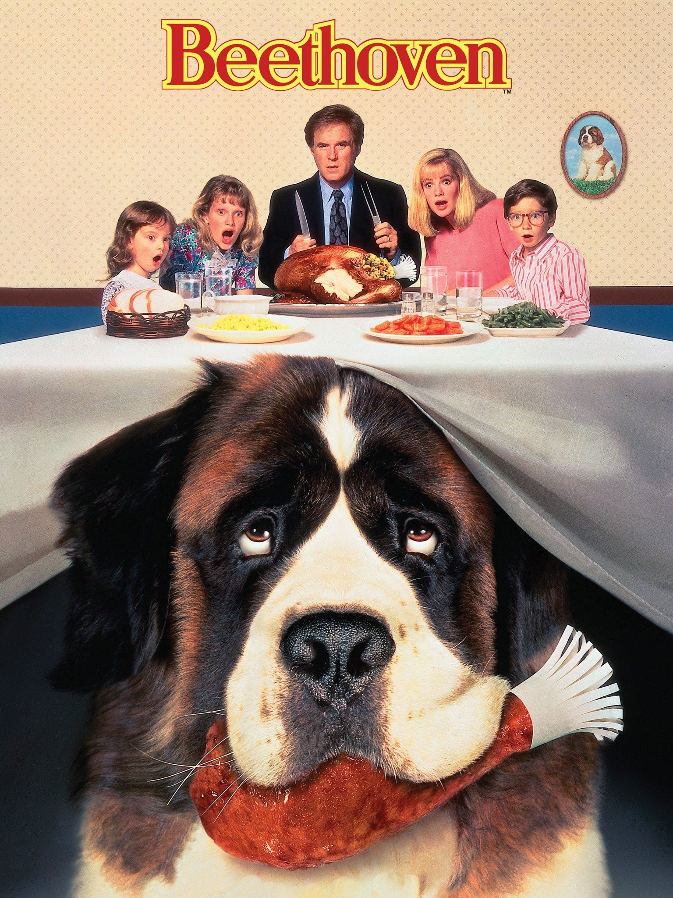
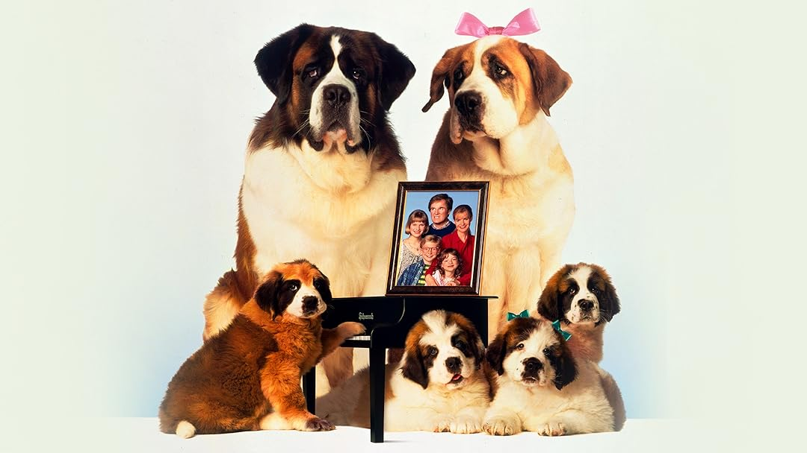
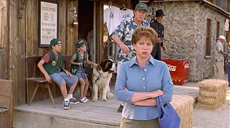

| Pelicula | BEETHOVEN |
|---|---|
| Director | Mark Griffiths John Putch David Mickey Evans Mike Elliott Brian Levant Ron Oliver Rod Daniel |
| Descripción |
Un cachorro de San Bernardo escapa de una banda de ladrones que ha robado en una tienda de animales
Después de pasar la noche en un cubo de basura es descubierto por la familia Newton. La familia decide adoptar al adorable cachorro,que llena de felicidad el hogar. Sin embargo, el perro crece y se convierte en un animal de 80 kilos que causa problemas a menudo A pesar de los problemas, toda la familia se une cuando Beethoven se ve amenazado por un malvado veterinario que quiere acabar con él. |
| Cronología |
Beethoven "Uno más de la familia" (1992) Beethoven "La familia crece"(1993) Beethoven"De excursión con la familia" (2000) |
| Imagen |    |